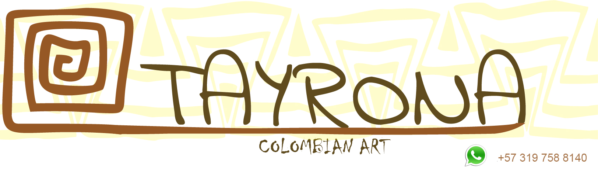
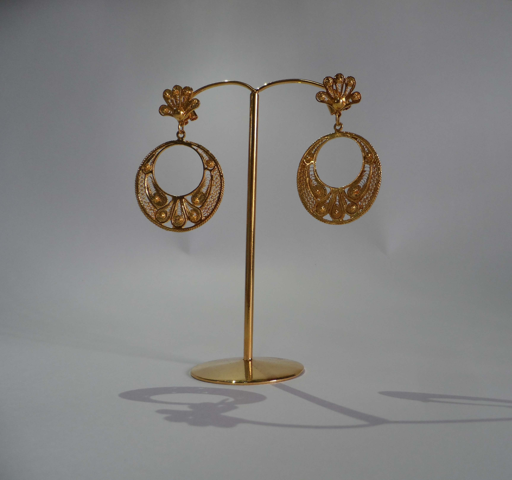
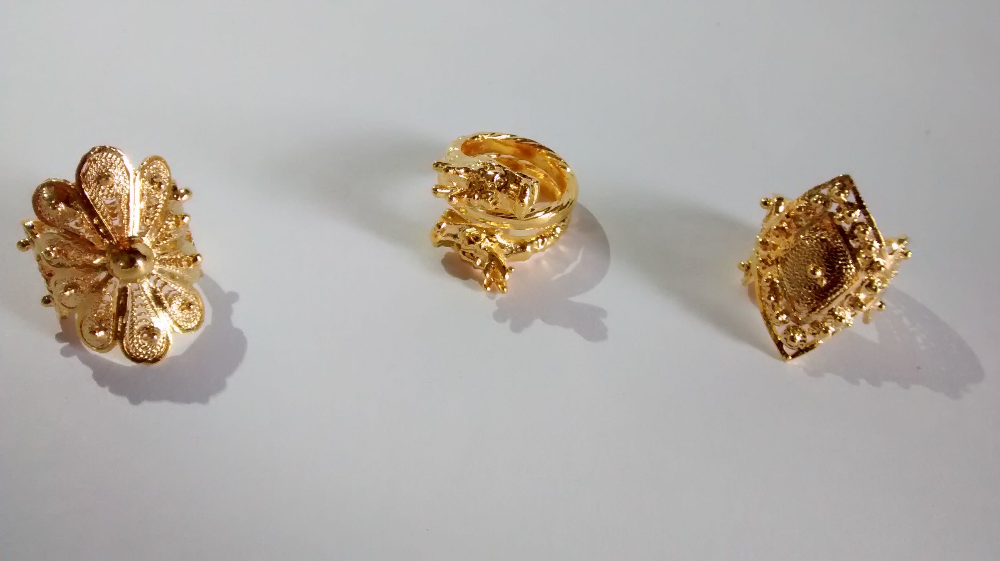
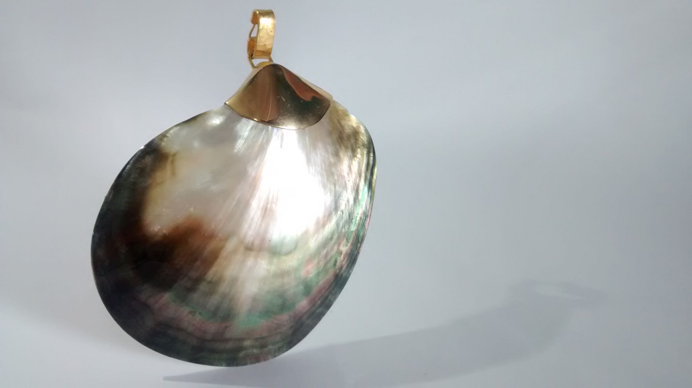

After a lot of years of experience and research “trial and error”


We have forged a high qualified team for handcraft production.



Our jewelry is created by master craftsman, who print their mastery in each piece.


We combine technology with millenary techniques of native territories of South America in order
to speed up the results.


A great part of our tools and machines were created by our artisans to
adapt pre-Columbian techniques like “la cera perdida” and “la tubanga” to the production
demands of current times.


We are characterized by applying the combination of techniques such as the twisted yarn on a
sheet


The filigree applied on sheet of gold and mixed with precious and semiprecious stones.


We work with 18 karat gold, emeralds, diamonds, rubies,


sapphires and semiprecious stones like murrine, agates, quartz, amazonite, morganite, and chrysocolla.
TAYRONA jewelry is addressed to a demanding public, who requires a meaning for the items they wear, and based its value on it.

It is important for us to keep the goldsmith tradition of our native territories alive,

contributing to the well-being of regions that have been affected by the Colombian armed conflict,
for instance the Colombian pacific coast zone where the gold that we use and the majority of our craftsman come from.


{kind=link}


{kind=link}
{kind=link}
{kind=link}
{kind=link}
{kind=link}
{kind=link}
{kind=link}
{kind=link}
{kind=link}
{kind=link}
{kind=link}